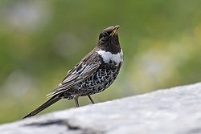
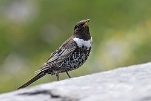

| Ring Ouzel | |
|---|---|
|  | |
| Conservation status | |
| Binomial name | |
| Turdus torquatus Linnaeus, 1758 |
| Ring Ouzel | |
|---|---|
|  | |
| Conservation status | |
| Binomial name | |
| Turdus torquatus Linnaeus, 1758 |
The Ring Ouzel (Turdus torquatus) is a European member of the thrush family Turdidae.
It is the mountain equivalent of the closely-related Common Blackbird, and breeds in gullies, rocky areas or scree slopes.
It breeds in the higher regions of western and central Europe and also in the Caucasus. Most populations are migratory, wintering in the Mediterranean region.
The Ring Ouzel is omnivorous, eating a wide range of insects, earthworms, rodents, lizards and berries. It nests in bushes or amongst rocks, laying several pale blue eggs, mottled with brown, in a neat cup-shaped nest.
It is territorial and normally seen alone or in pairs, although loose flocks may form on migration. When not breeding, several birds may also be loosely associated in good feeding areas, such as a fruiting tree, often with other thrushes.
The adult male is all black except for a white crescent on the breast and a yellowish bill. The wings have a silvery appearance due to white feather edgings. The male sings its loud and mournful song from trees or rocks.
The female is similar but duller, and younger birds often lack the breast crescent. The juvenile has brown plumage.
This species was first described by Linnaeus in his Systema naturae in 1758 under its current scientific name.[2]
"Ouzel" (or "ousel") is an old name for Common Blackbird from Old English osle.[3] "Ouzel" may also be applied to a group of superficially similar but unrelated birds, the dippers, the European representative of which is sometimes known as the Water Ouzel.
As with the English name, the scientific name also refers to the male's obvious white neck crescent, being derived from the Latin words turdus, "thrush", and torque, "torc" (neck ring).

{kind=link}